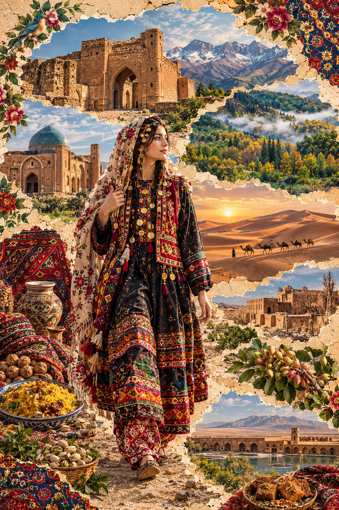
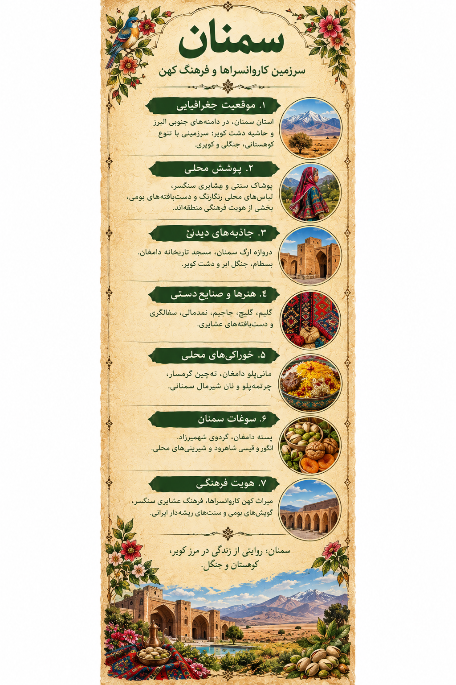

شهمیرزاد
شهمیرزاد با باغها، آبوهوای کوهستانی و پیشینه باغداری، بخشی از چهره متنوع فرهنگی و طبیعی استان است.Shahmirzad is known for its gardens, mountain climate, and horticultural heritage, forming part of Semnan's diverse cultural landscape.
این صفحه نگاهی به پوشش زنان، فرهنگ عشایری و روستایی، بناهای تاریخی، طبیعت و طعمهای محلی استان سمنان دارد؛ سرزمینی که تنوع اقلیمی آن در شیوه زندگی و میراث فرهنگی مردمش بازتاب یافته است.This page explores women's clothing, nomadic and village culture, historic landmarks, landscapes, and local flavors of Semnan—a region whose varied climate is reflected in the lives and cultural heritage of its people.

اثر سمنان بخشی از مجموعه «ایران، هزار رنگ» است؛ مجموعهای که پوشش زنان مناطق گوناگون ایران را در پیوند با جغرافیا، آیینها و حافظه فرهنگی هر منطقه روایت میکند.The Semnan artwork is part of “Iran, a Thousand Colors,” a collection portraying women's regional clothing in connection with geography, traditions, and cultural memory.

پوشاک سنتی زنان سنگسری از جلوههای شاخص فرهنگ پوشش در منطقه مهدیشهر و سنگسر است. رنگ، شیوه دوخت، لایههای لباس و آرایههای آن در کنار هم هویتی محلی و متمایز میسازند. این پوشش در گذشته با سبک زندگی دامداری و کوچروی نیز پیوند داشته است.Traditional Sangsari women's clothing is a distinctive expression of the culture around Mehdishahr and Sangsar. Its colors, tailoring, layers, and ornaments create a recognizable local identity, historically connected with pastoral and migratory ways of life.
پوشش سر و جزئیات تزئینی، بخشی مهم از کاملکردن پوشاک محلی بودهاند. شکل و کاربرد این اجزا میتواند با سن، موقعیت اجتماعی، مناسبت و محل زندگی تفاوت داشته باشد؛ بنابراین برای معرفی دقیق هر نمونه باید به روایت و مستندات همان جامعه محلی تکیه کرد.Head coverings and decorative details have been important elements of traditional dress. Their forms and uses may vary by age, social context, occasion, and locality, so accurate interpretation should rely on documentation and local accounts.
شهمیرزاد با باغها، آبوهوای کوهستانی و پیشینه باغداری، بخشی از چهره متنوع فرهنگی و طبیعی استان است.Shahmirzad is known for its gardens, mountain climate, and horticultural heritage, forming part of Semnan's diverse cultural landscape.
این ناحیه با فرهنگ عشایری و دامداری و پوشاک سنتی سنگسری شناخته میشود؛ میراثی که در خاطره و زندگی مردم منطقه حضور دارد.This area is associated with nomadic culture, pastoralism, and Sangsari traditional clothing—heritage that remains part of local memory.
روستایی در نزدیکی زیستبومهای ارزشمند منطقه توران که معماری بومی و پیوند زندگی روستایی با طبیعت کویری را نشان میدهد.A village near the valuable ecosystems of the Touran region, reflecting vernacular architecture and rural life alongside the desert environment.
پیرامون شاهرود از دشت و کویر تا ارتفاعات و جنگلهای کوهستانی گسترده است و تنوع زیستی و فرهنگی چشمگیری دارد.The area around Shahroud extends from plains and desert to highlands and mountain forests, offering notable ecological and cultural diversity.
از شناختهشدهترین نشانههای تاریخی شهر سمنان که با معماری دوره قاجار و کاشیکاریهای چشمگیر شناخته میشود.One of Semnan city's best-known historic landmarks, noted for its Qajar-era architecture and striking tilework.
از بناهای ارزشمند آغازین دوره اسلامی ایران که اهمیت تاریخی و معماری ویژهای دارد.An important early Islamic monument in Iran, distinguished by its historical and architectural significance.
مجموعهای از بناهای تاریخی و مذهبی در شهر بسطام که با نام بایزید بسطامی نیز پیوند دارد.A collection of historic and religious buildings in Bastam, also associated with Bayazid Bastami.
همنشینی چشماندازهای جنگلی و کوهستانی با پهنههای کویری، از ویژگیهای کمنظیر جغرافیای استان سمنان است.The meeting of forested highlands and vast desert landscapes is one of the distinctive geographical features of Semnan.
پلویی محلی و شناختهشده در دامغان که با ترکیب مواد و چاشنیهای ویژه تهیه میشود.A well-known local rice dish from Damghan, prepared with a distinctive combination of ingredients and seasonings.
از غذاهای محلی منطقه که در روایتهای خوراک سمنان از آن یاد میشود.A regional dish mentioned among the traditional foods of Semnan.
نان شیرین و معطری که در سفره و سوغات محلی جایگاه دارد.A fragrant, lightly sweet bread that features in local food traditions and souvenirs.
از شیرینیها و خوراکیهای سنتی که همراه چای و در پذیراییهای محلی سرو میشوند.Traditional treats often served with tea and at local gatherings.
پسته از محصولات شناختهشده کشاورزی دامغان و از سوغات مهم منطقه است.Pistachios are among Damghan's best-known agricultural products and regional souvenirs.
باغهای گردوی شهمیرزاد بخشی از هویت کشاورزی و اقتصادی این ناحیه کوهستانیاند.Shahmirzad's walnut orchards are part of the agricultural and economic identity of this mountain area.
دستبافتههای محلی بازتاب مهارت، ذوق و نیازهای زندگی روزمره جوامع روستایی و عشایری استان هستند.Local textiles reflect the skill, creativity, and everyday needs of the province's rural and nomadic communities.
محصولات خانگی و روستایی، از نان و شیرینی تا فرآوردههای باغی، بخشی از فرهنگ خوراک و سوغات سمنان را تشکیل میدهند.Homemade and rural products—from breads and sweets to orchard produce—are part of Semnan's food culture and souvenirs.
یادداشت: معرفی پوشاک محلی باید با توجه به تفاوتهای روستایی، قومی و خانوادگی و با اتکا به منابع معتبر و روایت جامعه محلی خوانده شود.Note: Local clothing traditions vary across villages, communities, and families; descriptions should be read alongside reliable documentation and local accounts.